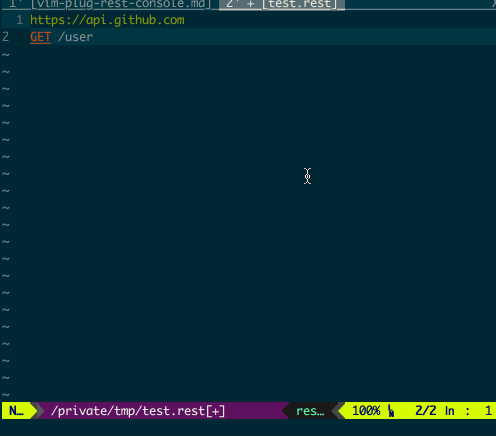

实现类 Postman 功能的 VIM 插件
在实现 Web Server API 的时候, 经常需要发送指定的 http 请求来验证对应的返回是否符合预期. 我们可以通过 Postman 来实现这个功能, 但这就需要在编辑器和 Postman 这两个软件之间来回的切换, 当修改代码的频次比较高时来回的界面切换还是比较影响效率的.
作为资深 Vim 党, 就在想能不能直接在 Vim 里面就实现类似 Postman 的功能: 发送请求, 然后在一个新的 Vim 窗口里显示返回结果.
还真找到了一个实现了这个功能的插件 vim-rest-console, 通过这个插件, 我们可以在一个 Vim 窗口里编辑 http 请求, 按 <Ctrl-j> 之后就可以在另外一个 split 的窗口中显示 http 请求的返回结果. 效果如下图所示:

这个插件是通过 curl 发送 http 请求, 然后把命令的输出放在了一个 split 的 Vim window 里面.
安装与使用
可以通过 vim-plug 进行安装, 在 .vimrc 文件中添加下面这行, 然后执行 :PlugInstall vim-rest-console:
Plug 'https://github.com/diepm/vim-rest-console' |
插件的使用也很简单:
- 首先需要在文件类型为
rest的窗口里编辑 http 请求; 可以通过编辑.rest结尾的文件或者是通过set ft=rest来实现; - 然后把光标放在对应的 http 请求块中, 按
<Ctrl-j>就会发送对应的请求并在一个新的窗口中显示求情对应的返回结果;
这里就需要解释下什么是请求块, 以及一个请求块包含了哪些内容.
http 请求块
一个 http 请求块有两种起始标志:
- 以 http 或 https 开头的 host 名;
--标志行; 这个和全局变量定义功能有关, 后面会有更详细的介绍;
而 http 请求块的结束标志是下一个 http 请求块的起始标志或者是文件的结束行.
还是举一个实际的例子更容易理解一些. 例如在下面的代码中就定义了两个请求块:
# http request block1 |
其中以 # 开始的行表示是注释信息, 也可以通过 // 来对行进行注释.
http 请求块的组成
在确定了一个 http 请求块的范围之后, 我们可以接着了解下一个请求块内部是有那几部分组成的:
- 请求的 host ; (也可以没有 host , 但需要在块的开始加上
--行, 表示使用全局定义的 host) - 可选的 cUrl 选项; 如
-i等; - 可选的 Header 等; 如
Connection: keep-alive等; - 请求操作及对应的 endpoint ;
- 可选的请求数据;
下面是一个包含了所有部分的示例 http 请求块:
# POSTing to an ElasticSearch service. |
在同一个 http 请求块中可以添加多个 endpoint 请求, 他们会被按顺序依次执行:
http://localhost:1208 |
当我们运行上面的请求块时, 就就会先设置 score 值, 紧接着就会去查询对应的 score 是否被成功更新. 两个请求的结果会被同时放在一个 window 里.
全局变量定义
我们可以定义一些全局的值, 包括 curl option, Header 以及一些变量等. 全局变量定义的范围是从文件第一行到第一个 -- 行. 还是先举一个例子吧:
// global definition |
在上面的例子里我们在全局变量定义区:
- 定义了一个全局的 host ; 当后面的请求块中没有定义 host 时就会使用这个全局 host 发送请求;
- 定义了 curl option 和 Header , 这部分内容会和后面请求块中对应的内容进行合并;
- 定义了变量, 在后面的请求快中可以通过
:key的方式来应用这个变量; 在上面的例子中,:name最后会被替换成hbliu.
到现在 vim-rest-console 的主要功能基本都介绍完了, 你可以在 这里 查看更详细的文档, 或者查看 示例.
我自己在使用这个插件的过程中感觉有一些地方不是很方便, 于是做了一些改进.
一些改进
主要包括以下几个改进:
- 增加了
gxmap , 可以在浏览器中打开对应的 http 请求, 主要是对GET类型的请求比较有用; - 在执行一个请求块时, 只连续执行光标下的所有非空行的请求; 这样就可以在一个请求块里共用同一个 host 名, 单独发送不同的请求;
- 过返回结果中滤掉加上
-i选项后 curl 命令的 Header 输出; - 删除了返回结果中为空行的第一行;
- 自动根据返回结果中的 Header 设置输出窗口的文件类型.
改进后的插件可以通过下面的方法进行安装:
Plug 'https://github.com/hiberabyss/vim-rest-console' |
- 本文链接：https://hiberabyss.github.io/2018/04/24/vim-plug-rest-console/
- 版权声明：本博客所有文章除特别声明外，均采用 CC BY-NC-SA 3.0 CN 许可协议。转载请注明出处！